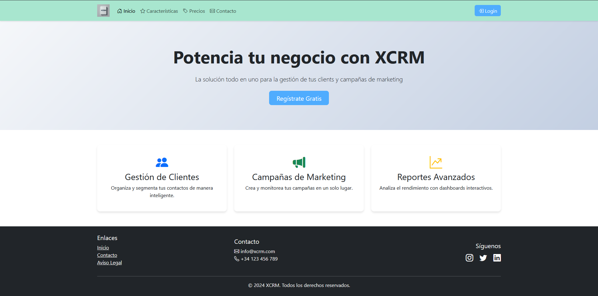

Proyectos
xcrm
XCRM es una aplicación web en la nube que ayuda a las empresas a gestionar contactos, tareas y campañas de forma sencilla y accesible desde cualquier dispositivo. El proyecto lo desarrollé en equipo con dos compañeros, lo que me permitió trabajar de forma coordinada y repartir responsabilidades.
Mi aportación se centró en la mejora de la experiencia de usuario: desarrollé el formulario de contacto con envío de correos, validación de archivos y subida desde ordenador o Dropbox. También trabajé en el diseño visual, la personalización de perfiles y funcionalidades que permiten usar el sistema sin necesidad de registrarse.
En el área de campañas, desarrollé la funcionalidad que permite editar las campañas antes de su lanzamiento, y añadí la visualización detallada de los clientes asociados, lo que facilita una gestión más contextualizada y personalizada. Además, me ocupé de la gestión segura de datos y de garantizar su trazabilidad.